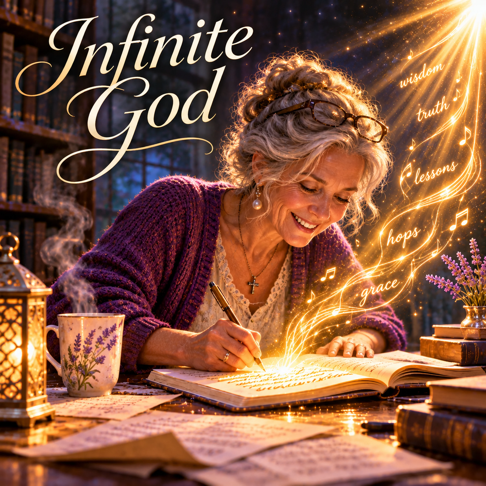

Infinite God

Want to download this song? Return to the Songs page, add this song to your playlist, then open My Playlist. Select the song and choose Download Song to review the Free Use agreement.
Lyrics
Verse 1
Three songs where there were none,
While too distracted to write even one.
My mind was racing everywhere,
With scattered thoughts and a little prayer.
Yet something stirred beneath it all,
A quiet answer to a call.
Chorus
I do not have power, Infinite God,
Nor can I comprehend Your ways.
I'm just a part of what You’ve made,
Yet You can fill my finite days.
I'm not the Source of all I see,
But I ask for You to work through me..
Verse 2
My mind feels like one over infinity,
Too small to see what lies ahead.
Yet thoughts arrive... unexpectedly,
And find their way through my head
I look behind and there I find
A lesson waiting in my mind.
Chorus
I do not have power, Infinite God,
Nor can I comprehend Your ways.
I'm just a part of what You’ve made,
Yet You can fill my finite days.
I'm not the Source of all I see,
But I ask for You to work through me..
Verse 3
One song became another's thought,
And then another’s lesson taught.
The more I learned, the more I caught
How little I had under-thought
Yet every time the words were done,
I marveled where they had begun.
Bridge
If I could see the end from the start,
Would I still wonder at the way?
If I held the Infinite in my heart,
What would be left for faith to say?
I needn’t know what’s beyond my view,
Only trust the One who sees me through.
Final Chorus
I do not have power, Infinite God,
Nor can I comprehend Your ways.
I'm just a part of what You’ve made,
Yet You can fill my finite days.
I'm not the Source of all I see,
But I ask for You to work through me..
Outro
I thought I had no songs to write,
But Someone was working out of sight.
Thank You, Lord, for what You've done—
Three songs arrived... plus this very one.
Devotional
When Finite Days Meet Infinite Grace
Ephesians 3:20–21 (KJV) — “Now unto him that is able to do exceeding abundantly above all that we ask or think, according to the power that worketh in us, Unto him be glory in the church by Christ Jesus throughout all ages, world without end. Amen.”
There are times when we look at our circumstances and see only what we lack. Not enough time. Not enough understanding. Not enough ability. Perhaps not even enough inspiration to begin.
We measure our possibilities against what we know of ourselves. And sometimes, by that measure, there seems to be very little left to offer. But God’s ability is not measured by ours.
In Infinite God, the writer begins with an unexpected experience. Distracted and unable to concentrate long enough to write a single song, she discovers that three songs have taken shape. And in reflecting upon that experience, a fourth emerges. What began as a season of scattered thoughts becomes an occasion for thanksgiving.
“I do not have power, Infinite God, / Nor can I comprehend Your ways. / I’m just a part of what You’ve made, / Yet You can fill my finite days.”
The Limits of Our Understanding
Isaiah 55:8–9 reminds us that God’s thoughts and ways are higher than ours. We live within the boundaries of time. We see what is immediately before us, remember portions of what lies behind, and wonder about what is still to come. God sees the whole.
Our understanding develops gradually, often through experiences whose meaning becomes clearer only afterward. Sometimes we recognize a lesson long after the circumstances that taught it have passed.
“I look behind and there I find / A lesson waiting in my mind.”
Psalm 77:11–12 encourages us to remember the works of the Lord and meditate upon His doings. Remembering becomes more than recalling events. It becomes an opportunity to recognize His faithfulness.
The Infinite and the Finite
“My mind feels like one over infinity, / Too small to see what lies ahead.” The comparison expresses the overwhelming difference between our limited understanding and the greatness of God.
Psalm 147:5 declares: “Great is our Lord, and of great power: his understanding is infinite.” The God whose understanding is infinite knows each of us personally. Psalm 139:1–3 describes His intimate knowledge of our thoughts, our movements, and our ways.
Our lives may seem small against the vastness of creation, yet they remain fully known to Him. Within those finite lives, He gives opportunities to learn, serve, create, encourage, and bear witness to His goodness.
The Source and the Instrument
“I’m not the Source of all I see, / But I ask for You to work through me.” James 1:17 teaches that every good gift and every perfect gift comes from above. First Peter 4:10 calls believers to use the gifts they have received as good stewards of God’s manifold grace.
We bring our abilities, experiences, knowledge, and willingness to the work before us. We practice, learn, make decisions, and labor faithfully. Yet we recognize that the gifts themselves, the opportunities to use them, and the strength to persevere are blessings entrusted to us.
This understanding cultivates both humility and responsibility. We need not claim to be the source of every good thing accomplished through our efforts. Neither should we neglect the work placed before us.
Colossians 3:23 instructs us: “And whatsoever ye do, do it heartily, as to the Lord, and not unto men;” Our responsibility is faithfulness with what we have been given. The outcome belongs in God’s hands.
Leaving Room for Wonder
“If I could see the end from the start, / Would I still wonder at the way? / If I held the Infinite in my heart, / What would be left for faith to say?” These questions invite us to examine our desire for certainty.
We often want to understand where a path will lead before we take the first step. Proverbs 3:5–6 calls us to trust in the Lord with all our heart and acknowledge Him in all our ways. Faith allows us to move forward with the understanding we have, trusting the One whose wisdom exceeds our own.
Sometimes we discover the significance of a step only after we have taken it. Sometimes an experience becomes the foundation for a lesson we will not recognize until much later. And sometimes, when we believe we have nothing left to offer, something new begins.
More Than We Imagined
“I thought I had no songs to write, / But Someone was working out of sight. / Thank You, Lord, for what You’ve done— / Three songs arrived... plus this very one.” There is gentle humor in that ending, but also a testimony of gratitude.
The writer began with an awareness of limitation and ended with a fuller appreciation of possibility. Ephesians 3:20 directs our attention to the One who is able to do exceeding abundantly above all that we ask or think.
We may never fully comprehend the ways God works throughout our lives. But we can recognize His gifts, remember His faithfulness, and offer Him our willing service.
Our days are finite. His understanding is infinite. And every day entrusted to us is another opportunity to grow in faith and serve Him.
Prayer
Heavenly Father,
Your understanding is infinite, and Your wisdom is beyond my comprehension. Thank You for knowing me completely and for caring about the details of my life.
Forgive me when I measure what is possible only by what I can see or understand.
Help me recognize the gifts You have entrusted to me and use them faithfully. Give me the patience to learn, the humility to acknowledge You as the Source of every good gift, and the courage to move forward when the path is not yet clear.
Teach me to remember Your faithfulness and recognize the lessons You have placed along my way.
When my thoughts are scattered, grant me peace. When my understanding is limited, strengthen my trust.
And when opportunities arise that I could never have imagined, may my first response be gratitude. Fill my finite days with work that honors You.
In Jesus’ name, Amen.
For Reflection
Have you ever looked back upon an experience and recognized a lesson that was hidden from you at the time?
Are there abilities or opportunities in your life that you have underestimated because of your own sense of limitation?
What would it mean to trust God’s wisdom while faithfully using the understanding and gifts He has already given you?
How might remembering God’s past faithfulness help you approach an uncertain future?
Extra Info — Scripture Map
God’s abundant power: Ephesians 3:20–21
His ways beyond ours: Isaiah 55:8–9
Remembering His works: Psalm 77:11–12
Infinite understanding: Psalm 147:5
Personally known by God: Psalm 139:1–3
Every good gift: James 1:17
Stewardship of gifts: 1 Peter 4:10
Faithful work: Colossians 3:23
Trusting His direction: Proverbs 3:5–6